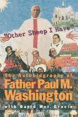

<body bgcolor="#FFFFFF" text="#000000" link="#0000FF" vlink="#CC0000" alink="#CC0000"><center><hr width="350" size="1" align="center" noshade>An inner-city Episcopal priest shares a lifetime of fighting for civil and women's rights<hr width="350" size="1" align="center" noshade><p><a href="https://cdcshoppingcart.uchicago.edu/Cart/ChicagoBook.aspx?ISBN=9781566391771&&PRESS=temple" target="_top">Buy this book!</a> | <a href="https://cdcshoppingcart.uchicago.edu/Cart/Cart.aspx?PRESS=temple" target="_top">View Cart</a> | <a href="https://cdcshoppingcart.uchicago.edu/Cart/Cart.aspx?PRESS=temple" target="_top">Check Out</a></p><p></p></center><!--none//--><h1>"Other Sheep I Have"</h1>
<H2>The Autobiography of Father Paul M. Washington</H2>
<h3>Paul M. Washington with David McI. Gracie, afterword by Barbara Harris</h3>
<P>cloth 1-56639-177-6 $75.50, May 94, <FONT COLOR=#990033>Out of Stock Unavailable</FONT>
<br>paper 1-56639-178-4 $30.95, May 94, <FONT COLOR=#990033>Available</FONT>
<BR> 280 pp
5.5x8.25
29&nbsp;halftones
</P><BLOCKQUOTE><I>"Washington describes these historic events with the intimacy of a co-participant and confesses his own inner struggles with humility and candor. This work is history as well as inspirational reading."</I>
<br>&#151<b><I>Library Journal</I></b><I></I></BLOCKQUOTE>
<p>Father Paul M. Washington rose to local and nation prominence as an unflagging supporter of civil and women's rights. One of a handful of black priests in a traditionally white church, he fought for understanding among all people, eventually serving twenty-five years as the Rector of the Episcopal Church of the Advocate in an inner-city Philadelphia neighborhood. Though his ideas about equality often went against the views of the Episcopal church leadership, he rejected threats of withdrawn funding or retaliation to follow his heart and his theology.
<p>Father Washington's story is a window of insight into the struggles for justice and dignity in the latter half of the twentieth century. In the tumultuous 1960s he supported the Black Power movement, the Black Panther Party, and many other groups working for peace and justice, providing meeting places and guidance. He often found himself in the midst of racial disturbances&#151the riots on Susquehanna Avenue in 1963 and on Columbia Avenue in 1964, in front of the Board of Education where high school students protested the Eurocentric curriculum, and outside the walls of Girard College where citizens and civic leaders demonstrated against the school's exclusion of black children. In the 1980s, he helped Philadelphia city officials negotiate with MOVE members and was a vocal supporter of Ramona Africa, fighting for her release from prison. It was in his church on the corner of 18th and Diamond Streets that women were first ordained a priests in the Episcopal church. And it was one of his congregation, Barbara Harris, who became the first female Episcopal bishop.
<p>In his evocative voice, Father Washington describes the pivotal events of his life and how each impacted upon his evolving ideas of the relationship between religion and justice. Spanning seven decades, his account is at once an insightful and unique historical account of political action, of the reformation of the church, of the changing urban landscape, and of a life graced by leadership and spiritual enlightenment.
<BR>&nbsp;<h2>Excerpt</h2><P>Excerpt available at <a href="http://www.temple.edu/tempress">www.temple.edu/tempress</a></p>
<BR>&nbsp;<h2>Reviews</h2>
<p><I>"[E]asy, enjoyable, and provocative...Washington offers insight into the experiences of an African American pastor whose ministry emanated from within the structures of a white church."</I>
<br>&#151<b><I>Sojourners</I></b>
<p><I>"Paul Washington is a man of deep compassion and commitment to humanity based upon a profound understanding of Christian faith."</I>
<br>&#151<b>William H. Gray, III</b>, President and CEO, United Negro College Fund, and former congressman from Pennsylvania
<p><I>"Like his biblical namesake, Father Paul has sounded the trumpet to 'break every yoke' for </I>all<I> people, whatever their race, nation, gender or sexual orientation. In a world paralyzed by greed, his humble life and abundant giving summon us to follow and do likewise. To Father Paul Washington, the world will always be his pasture. As one of his sheep, I will forever be grateful for his gift of love that summoned me to a renewal of my life."</I>
<br>&#151<b>Chuck Stone</b>, syndicated columnist and Walter Spearman Professor of Journalism at the University of North Carolina
<p><I>"The fact that the Church of the Advocate was the site of the historic service for the ordination of women to the priesthood was but a natural outgrowth of Paul's and the community's progress in understanding this vital issue. Paul stands as a witness to God's grace in action and to the power of faith working through community to bring about justice, peace, and reconciliation."</I>
<br>&#151<b>Barbara C. Harris</b>, Suffragan Bishop, Diocese of Massachusetts
<p><I>"Father Paul Washington's life as God's messenger to disenchanted, disenfranchised, disconnected, despised, distrusted and disheartened residents of Philadelphia's forsaken neighborhoods is persuasive evidence of the human spirit's potential for virtue. His autobiography confirms my description of him as 'the patron saint of the inner city and the eloquent conscience of the dissident and distraught groups which took refuge in his church.'"</I>
<br>&#151<b>Charles W. Bowser</b>, author of <I>Let the Bunker Burn: MOVE and the Final Battle</I>
<BR>&nbsp;<h2>Contents</h2><P>
<p>Preface
<br>Introduction &#150 David Mcl. Gracie
<br>1. Offered to God
<br>2. From Liberia to Eastwick
<br>3. Arrival at the Advocate
<br>4. Into the Streets
<br>5. Black Unity, 1966
<br>6. Survival of the Parish
<br>7. A Divided City
<br>8. The Black Power Conference, 1968
<br>9. Reparations
<br>10. The Black Panther Convention
<br>11. The Power of Women
<br>12. "A Castle to Keep Me Safe"
<br>13. A Pivotal Year, 1971
<br>14. "Neither Male nor Female"
<br>15. MOVE
<br>16. Honors and Dishonor
<br>17. Church Repairs and Church Renewal
<br>18. "One Fold, One Shepherd"
<br>Afterword &#150 Barbara Harris
<br>Sources
<br>Index
</P><BR>&nbsp;<H2>About the Author(s)</H2>
<P><b>David McI. Gracie</b> is Peace Education Director of the American Friends Service Committee. For twenty years he served as a priest of the Episcopal church in several Philadelphia and Detroit parishes and has been a friend and colleague of Father Washington's since 1967.</P>
<BR><H2>Subject Categories</H2>
<p><A HREF="/tempress/religion.html" TARGET="_top">Religion</a>
<BR><A HREF="/tempress/african.html" TARGET="_top">African American Studies</a>
<BR><A HREF="/tempress/women.html" TARGET="_top">Women's Studies</a>
</p>
<p align="center"><a href="https://cdcshoppingcart.uchicago.edu/Cart/ChicagoBook.aspx?ISBN=9781566391771&&PRESS=temple" target="_top">Buy this book!</a> | <a href="https://cdcshoppingcart.uchicago.edu/Cart/Cart.aspx?PRESS=temple" target="_top">View Cart</a> | <a href="https://cdcshoppingcart.uchicago.edu/Cart/Cart.aspx?PRESS=temple" target="_top">Check Out</a></p><p><font face="Arial" size="1"><a href="copyright.html" onMouseOver="window.status='Web Copyright Policy';return true;" onMouseOut="window.status=''" title="Web Copyright Policy">&copy;</a> 2015 <a href="http://www.temple.edu" target="new" onMouseOver="window.status='Link to Temple University home page';return true;" onMouseOut="window.status=''" title="Link to Temple University home page">Temple University</a>. All Rights Reserved. http://www.temple.edu/tempress/titles/1036_reg.html</font></p>